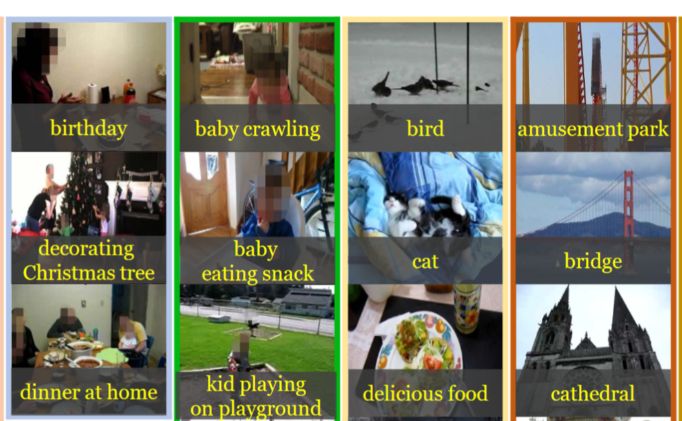

PROJECTS
SPEECH RECOGNITION SYSTEM
Read more »

CUSTOMER REVENUE PREDICTION USING GA DATA
Read more »
TOPIC MODELLING AND HEADLINE GENERATION USING ABC NEWS DATA
Read more »
TOXIC COMMENT CLASSIFICATION
Read more »
DEMAND FORECASTING
Read more »
DEFECTIVE CASTING REMOVAL USING ROBOTIC ARM
Read more »
PREDICTING PLAYER'S MARKET VALUE USING FIF19 DATASET
Read more »

CLIPNET
Read more »